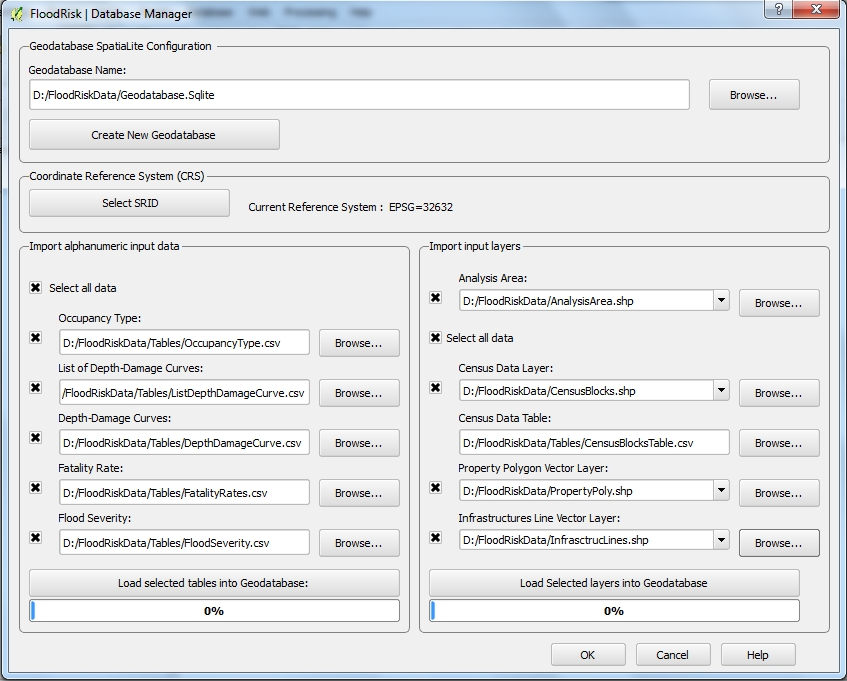

Database Manager¶
The database manager window allows you to create a new spatialite geodatabase having the expected data model and upload all the data into it. Data stored in the geodatabase concern population and assets at risk and their vulnerability in respect of floods.

The upper side of the window allows you to to create a new spatialite geodatabase. After the creation of the geodatabase and before loading geographic data it is necessary to define its geographic reference system. Until it is loaded the layer of Analisy Area you can change geographic reference system: after this option is disabled. To enable it again the geodatabase must be emptied of all geographic data (tables AnalysisArea, CensusBlocks, StructurePoly and InfrastrLines).
The left side of the window allows you to upload or update the vulnerability curves of exposures. These are alphanumeric data and are loaded from csv files having semicolon as value separator.
Examples of tables are listed below:
The the right part of the window allows you to upload or update geographic data of exposures. These are vector data type and are loaded from shapefiles. The system does not have its own scale but is flexible and able to manage different data sources: from maps of land use with a different degree of detail until detailed urban maps. So the data detail depends on the scale of the cartography source and consequently the scale of the final result depends on it. Data of exposures therefore may refer to maps of large areas or detailed local maps.
The list of shapefile is:
- AnalysisArea: polygon shapefile
- Census Data Layer: polygon shapefile having fields CensID type Real; Resident type Integer; Seasonal as Integer
- Census Data Table: csv file having fields CensID and Resident
- Property Polygon Vector Layer: polygon shapefile having fields OccuType type VARCHAR(5); Valstr type Real; Valcon as Real
- Infrastructures Line Vector Layer: line shapefile having fields OccuType type VARCHAR(5); Valstr type Real; Valcon as Real
Example of OccupancyType.csv table¶
| IND | NumDomain | code | Description | Valstr | Valcon |
|---|---|---|---|---|---|
| 1 | 10 | 11100 | Continuous Urban Fabric (S.L. > 80%) | 1520 | 760 |
| 2 | 10 | 11210 | Discontinuous Dense Urban Fabric (S.L. : 50% - 80%) | 650 | 325 |
| 3 | 10 | 11220 | Discontinuous Medium Density Urban Fabric (S.L. : 30% - 50%) | 400 | 200 |
| 4 | 10 | 11230 | Discontinuous Low Density Urban Fabric (S.L. : 10% - 30%) | 200 | 100 |
| 5 | 10 | 11240 | Discontinuous Very Low Density Urban Fabric (S.L. < 10%) | 100 | 50 |
Valstr in Euro/sqm
Valcon in Euro/sqm
Example of ListDepthDamageCurve.csv table¶
| VulnID | Description |
|---|---|
| 1 | Urban Altas Depth-Damage Curves |
Example of DepthDamageCurves.csv table¶
| VulnID | OccuType | DmgType | VulnType | HydroValue | Damage |
|---|---|---|---|---|---|
| 1 | 11100 | 1 | 1 | 0.3048 | 0.00 |
| 1 | 11100 | 1 | 1 | 0.7620 | 0.10 |
| 1 | 11100 | 1 | 1 | 0.9144 | 0.25 |
| 1 | 11100 | 1 | 1 | 1.2192 | 0.40 |
| 1 | 11100 | 1 | 1 | 1.5240 | 0.50 |
| 1 | 11100 | 1 | 1 | 2.4384 | 0.60 |
| 1 | 11100 | 1 | 1 | 3.0000 | 0.60 |
| 1 | 11100 | 1 | 1 | 9999.0 | 0.60 |
HydroValue in meters of wather depth
Example of FatalityRates.csv table¶
| FRType | num | Fseverity | WarnTime | Understanding | FatRate |
|---|---|---|---|---|---|
| 0 | 3 | HIGHT | 0 | Vague | 0.75 |
| 0 | 3 | HIGHT | 24 | Vague | 0.75 |
| 0 | 2 | MEDIUM | 0 | Vague | 0.15 |
| 0 | 2 | MEDIUM | 0.25 | Vague | 0.15 |
| 0 | 2 | MEDIUM | 1 | Vague | 0.04 |
| 0 | 2 | MEDIUM | 24 | Vague | 0.03 |
| 0 | 1 | LOW | 0 | Vague | 0.01 |
| 0 | 1 | LOW | 0.25 | Vague | 0.01 |
| 0 | 1 | LOW | 1 | Vague | 0.007 |
| 0 | 1 | LOW | 24 | Vague | 0.0003 |
| 0 | 3 | HIGHT | 0 | Precise | 0.75 |
| 0 | 3 | HIGHT | 24 | Precise | 0.75 |
| 0 | 2 | MEDIUM | 0 | Precise | 0.15 |
| 0 | 2 | MEDIUM | 0.25 | Precise | 0.15 |
| 0 | 2 | MEDIUM | 1 | Precise | 0.02 |
| 0 | 2 | MEDIUM | 24 | Precise | 0.01 |
| 0 | 1 | LOW | 0 | Precise | 0.01 |
| 0 | 1 | LOW | 0.25 | Precise | 0.01 |
| 0 | 1 | LOW | 1 | Precise | 0.002 |
| 0 | 1 | LOW | 24 | Precise | 0.0002 |
WarnTime : in hours